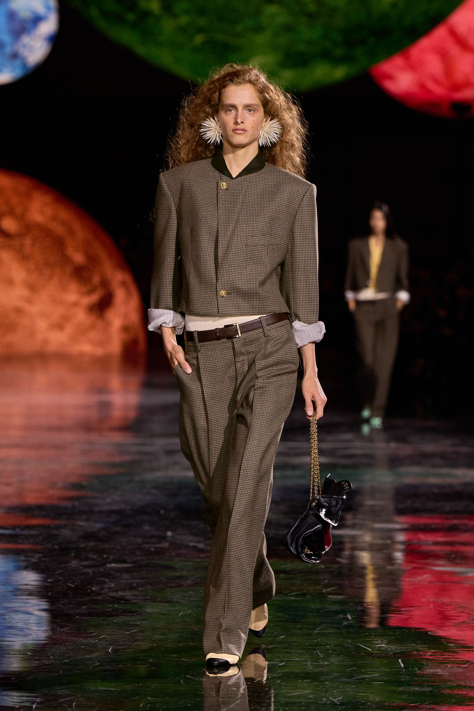
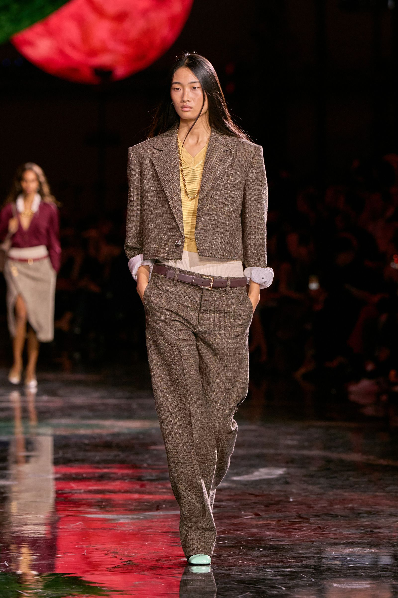
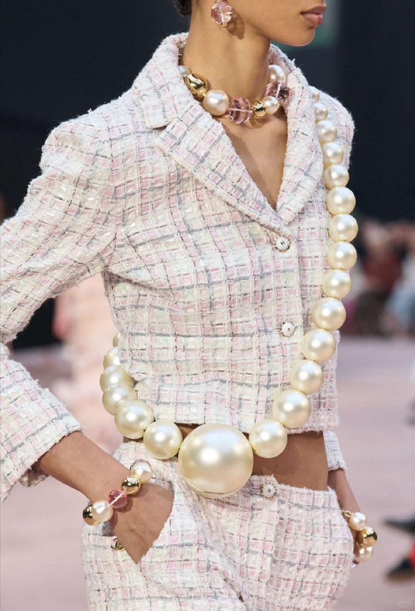
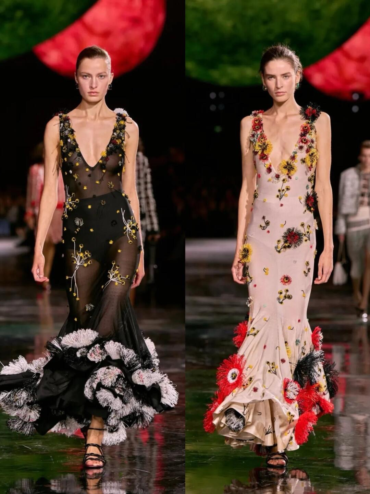
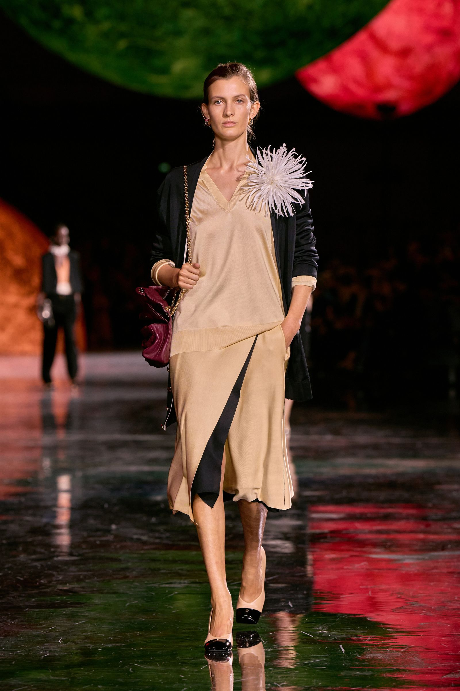

轻是一种抵抗
2025年10月，巴黎大皇宫，Chanel 2026春夏女装系列发布。
在Virginie Viard离任后，Chanel的创作工作室以「轻逸」（Legèreté）为核心命题，通过解构斜纹软呢的密度、放大珍珠的尺度、让山茶花从刺绣中「脱落」，完成了一次对Chanel经典语法的反向推敲。
这不是关于传承的展示，而是一次对「重量」的重新定义——当一个时装屋拥有如此沉重的遗产，真正的奢侈不是承载更多，而是学会释放。

01 笼门敞开的空间寓言
巴黎十月的晨光从大皇宫的玻璃穹顶倾斜而下——不是那种金灿灿的、炫耀的光，而是一种被过滤过的、几乎是乳白色的漫射。
大皇宫的中殿被改造成一座巨大的白色鸟笼，笼门敞开，地板铺满细沙。模特走出来的时候，脚下有轻微的陷落声。
你最先注意到的不是衣服，而是声音。
沙子摩擦地面的声音；斜纹软呢被解构后留下的空气穿行的声音；巨型珍珠耳环在转身时轻轻撞击锁骨的声音。
Chanel的这一季，是关于「重量」的——或者说，是关于如何让沉重之物看起来像在呼吸。
大皇宫中殿的巨型鸟笼装置，高约18米，纯白钢架结构。
但从第一组造型出场的那一刻起，笼子的含义发生了偏转——它不是一个囚禁的符号，而是一个被主动敞开的空间。
模特从中走出，不是逃离，而是漫步。
笼门没有被戏剧化地推开，它只是开着——像一扇你随时可以离开的门，但你选择留下。
这个空间设置与Gabrielle Chanel本人构成了一种沉默的对话。
1910年，她在康朋街31号开设第一家帽子店时，所做的正是将女性从紧身胸衣的「笼子」中解放出来。
一百一十五年后，大皇宫里的鸟笼被刻意敞开——Chanel似乎在说：
解放不是一次性的革命，而是反复的选择。
笼内的细沙地面削弱了高跟鞋的锐利声响。
你听不到T台上那种惯常的、带有攻击性的节奏。
取而代之的是一种更接近散步的韵律——模特不是在工作，她们只是在走路。
这个微妙的声音决策，为整场秀定下了基调：
轻，不是没有重量，而是重量被重新分配。
02 斜纹软呢的呼吸感
第一组造型出场时，你几乎会怀疑自己的眼睛——那是Chanel的斜纹软呢外套，但没有内衬。
传统的Chanel外套以精密的衬里结构闻名：多层面料、手工绗缝、链式内摆——它们赋予外套挺括的廓形，但也赋予它一种建筑般的重量。
而在这一季，创作工作室做了一件看似简单实则极端的事：
抽走内衬，但保留轮廓。

外套的肩线依然圆润，袖窿依然精准，下摆依然在髋骨的位置利落收束。
但当模特转身时，外套的边缘会轻轻飘起——大约三厘米的幅度，像一扇被微风吹动的百叶窗。
这不是飘逸，是松动。
斜纹软呢本身也被重新处理。
传统的粗花呢经纬被替换为更细的棉麻混纺纱线，经纬密度降低，让光线进入，使一件外套从固体变为半透明体。
这是对斜纹软呢最激进的解构：
不是拆散它，而是让它呼吸。
03 珍珠的尺度游戏
如果说斜纹软呢的变化需要近距离才能察觉，那么珍珠的变化则是一目了然的——它们变大了。
不是大了一点，而是大到荒谬的程度。
Look7的模特颈间挂着一串「珍珠」——每颗直径约8厘米，材质实为手工打磨的白色树脂。
Chanel将珠宝的尺度推到了配饰的边界之外：
这些珍珠不再是装饰，而是衣着的结构部件。

04 山茶花的「脱落」
山茶花是Chanel最稳定的符号——每一季，它以不同的形式出现：印花、刺绣、纽扣、珠宝。
但这一季，山茶花迟到了——或者说，它正在离开。
Look22是一条黑色真丝雪纺长裙，裙摆处散落着约四十朵白色山茶花。
但它们不是绣上去的，不是印上去的。
每一朵都由一根单独的丝线缝在裙摆边缘。
八朵花只有一根丝线固定。

这不是事故。
这是设计。
脱落的瞬间，观众席传来一阵轻微的骚动——先是紧张，然后是理解。
Chanel在展示一种全新的态度：
符号不需要被死死钉住。
一朵离开裙摆的山茶花，仍然是一朵山茶花。
05 轻逸的哲学：Gabrielle的回信
回到那个鸟笼。
Gabrielle Chanel一生都在与重量做斗争。
她剪掉裙摆、扔掉束腰、用jersey面料替代绸缎、用假珍珠替代真珠宝——每一步都是在做减法。
这一季给出了一个答案：
减到刚好能承受风的重量。
那条在裙摆处脱落山茶花的黑色长裙，同时是该系列中最「重」和最「轻」的作品。
它的重在于它所承载的符号历史——山茶花与Chanel之间一百年的绑定。
它的轻在于它主动释放了这个符号——让花落下，让意义松动，让一件Chanel礼服接受「不完整」的可能性。

不是撤退。
这是一种更高级的进攻——
以轻为刃。